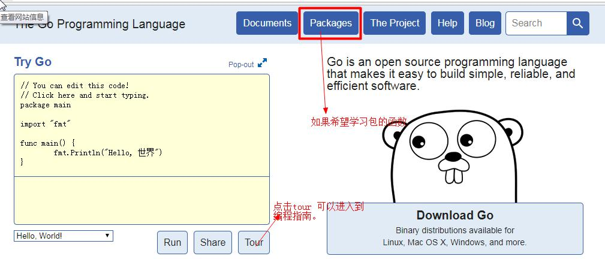
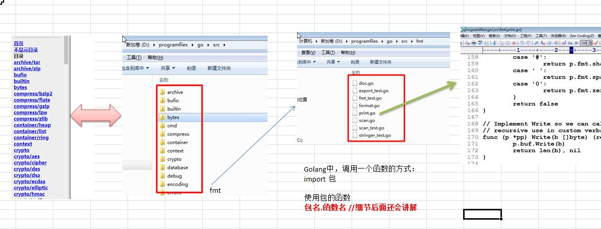

Golang 官方编程指南
说明： Golang 官方网站 https://golang.org

点击上图的 tour -> 选择 简体中文就可以进入中文版的 Go 编程指南 。

Golang 官方标准库 API 文档， https://golang.org/pkg
可以查看 Golang 所有包下的函数和使用

解释术语：API
api ： application program interface :应用程序编程接口。
就是我们 Go 的各个包的各个函数。
Golang 标准库 API 文档
1) API （Application Programming Interface,应用程序编程接口）是 Golang 提供的基本编程接口。
2) Go 语言提供了大量的标准库，因此 google 公司 也为这些标准库提供了相应的 API 文档，用于告
诉开发者如何使用这些标准库，以及标准库包含的方法。
3) Golang 中文网 在线标准库文档： https://studygolang.com/pkgdoc
4) Golang 的包和源文件和函数的关系简图

5) 有一个离线版的 Golang_Manual_By_AstaXie_20120522.chm